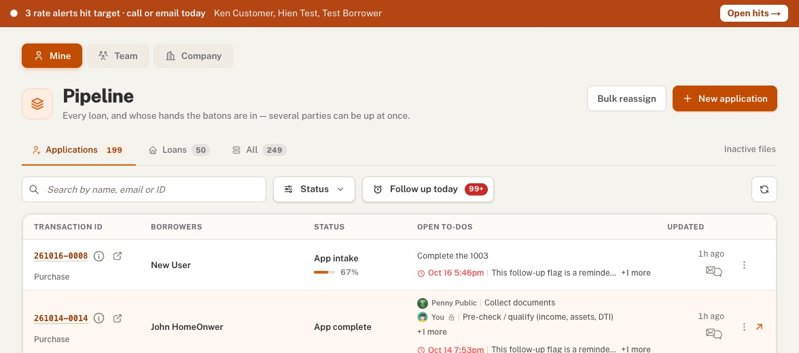
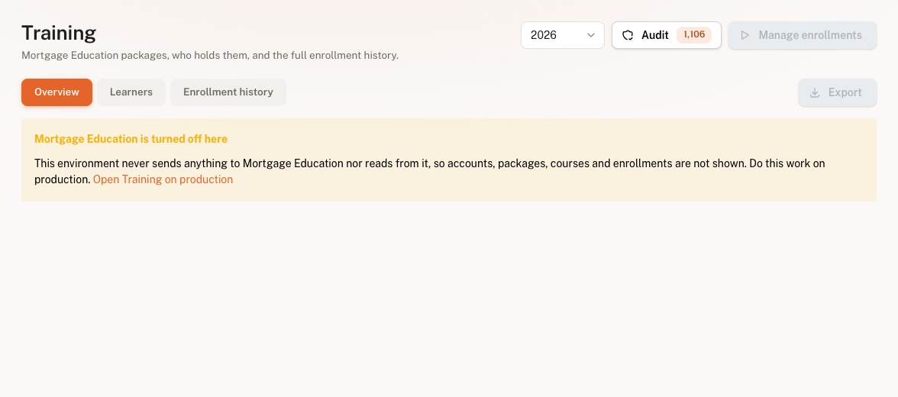
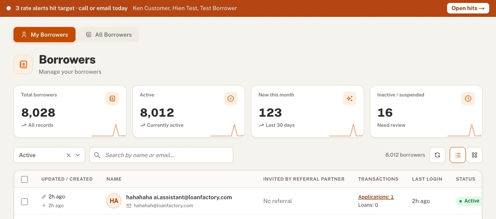
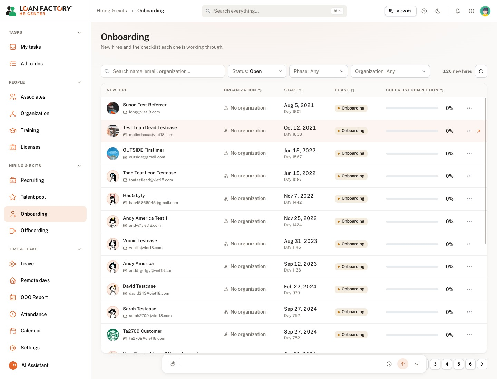
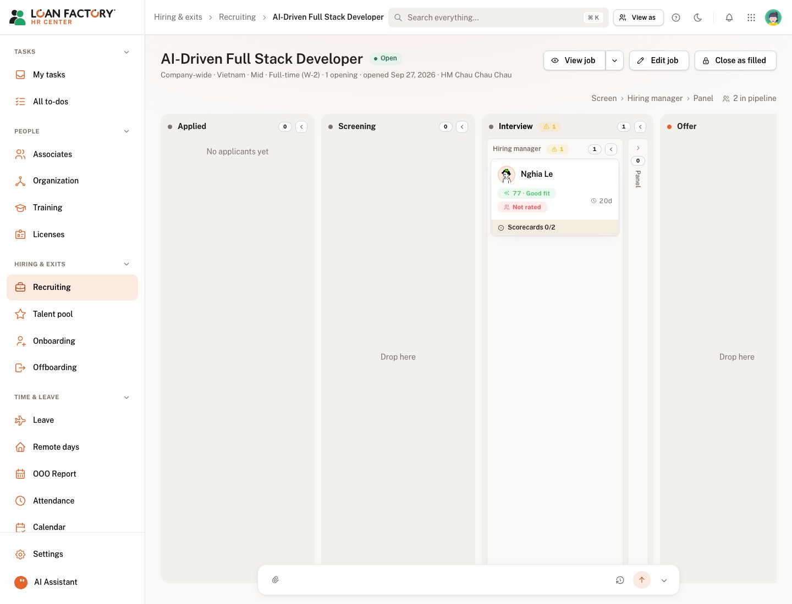

Gộp issue 1 đã duyệt (tab Not started), 7 điểm Bao nêu ngày 18/10, và các điểm 9–13 nêu sau đó. Chỉ đổi giao diện: không thêm API, không đổi dữ liệu. Tên và số liệu lấy từ staging. Ảnh "trước" là ảnh Bao gửi.
Cả ba kiểu dùng cùng số liệu. Tối nay Bao không trả lời thì tôi làm kiểu 1 (Tera), vì kiểu này dễ đọc nhất khi có 8 tab, và chấm màu khớp với thanh Stage cách A.



HR app có hai cách. Trang Onboarding dùng thanh dày 6px, màu theo % (cam dưới 40%, xanh dương 40–80%, xanh lá từ 80%), số % in đậm bên phải. Màn tuyển dụng thì không có thanh, chỉ có chip stage màu và số ngày nằm ở stage. Recruit chưa có ngày vào stage, nên không làm "số ngày" được nếu không sửa BE.

